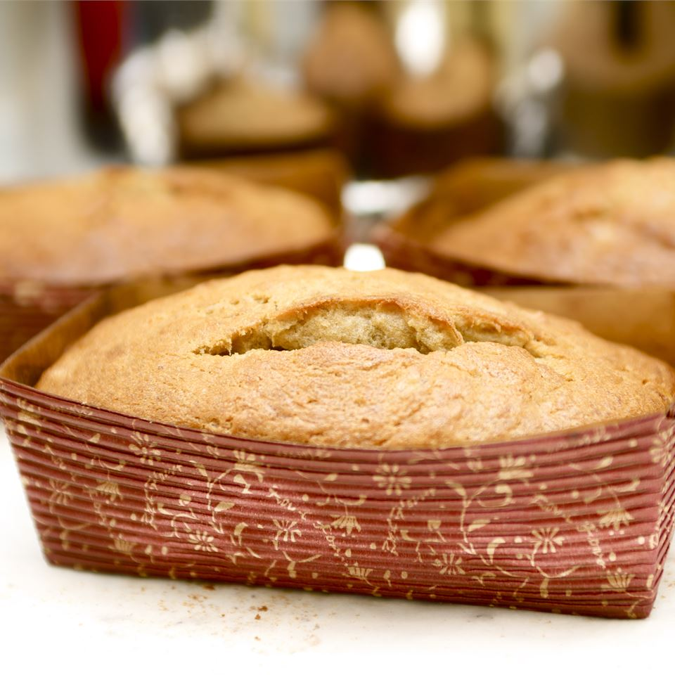

Banana Bread
Description
Banana bread is one of my favorites to make. It's usually really simple, but can also get really complex, and it's already really delicious.

- 5 very ripe bananas
- 4 eggs
- 1 cup shortening
- 2 1/2 cups white sugar
- 1 tablespoon vanilla extract
- 3 1/2 cups all-purpose flour
- 2 teaspoons baking soda
- 1 teaspoon salt
- Preheat oven to 300 degrees F (150 degrees C). Grease 2 - 9x5 inch loaf pans. In a medium bowl, mash bananas and stir in the eggs until well blended. Set aside.
- In large bowl, beat shortening and gradually add sugar. Stir in vanilla and banana mixture. Whisk together flour, baking soda, and salt; blend into batter. Add walnuts if desired. Divide between the prepared pans.
- Bake for 1 hour 15 minutes in the preheated oven, or until a toothpick inserted into the center of the loaf comes out clean.
Back to main page